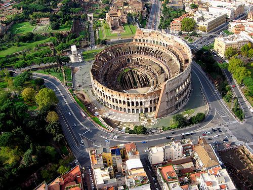
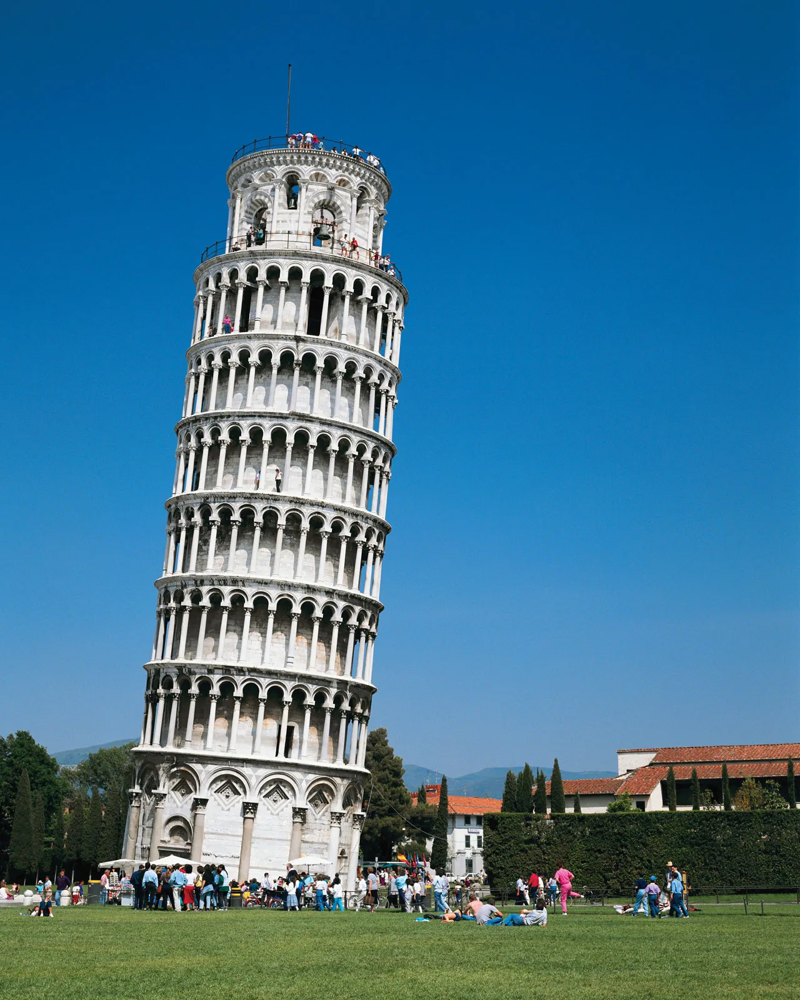
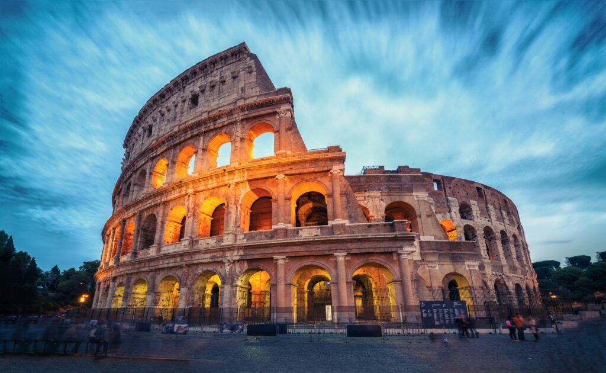
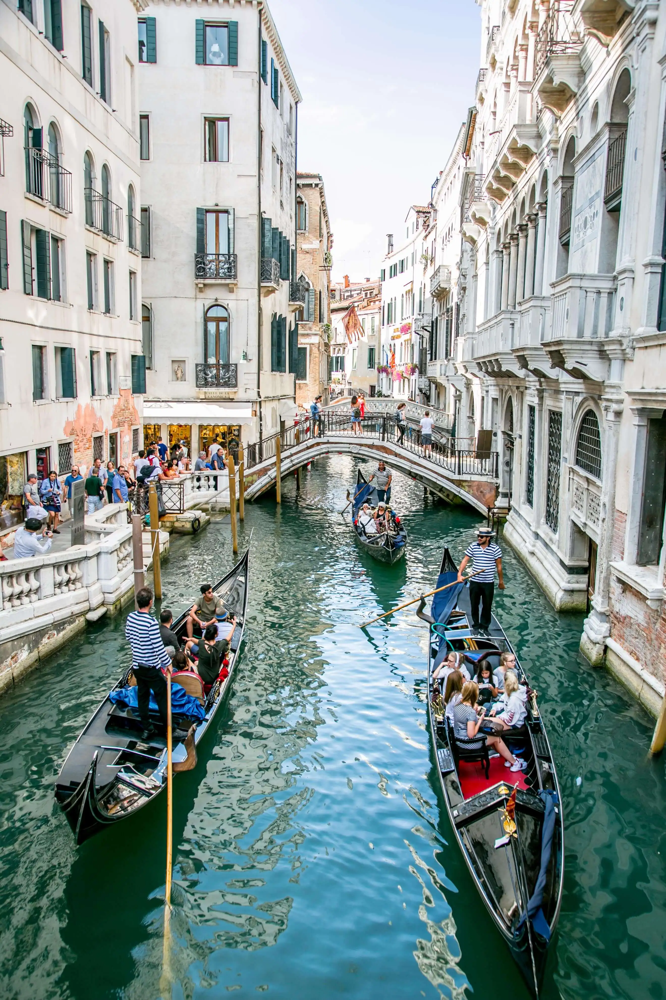
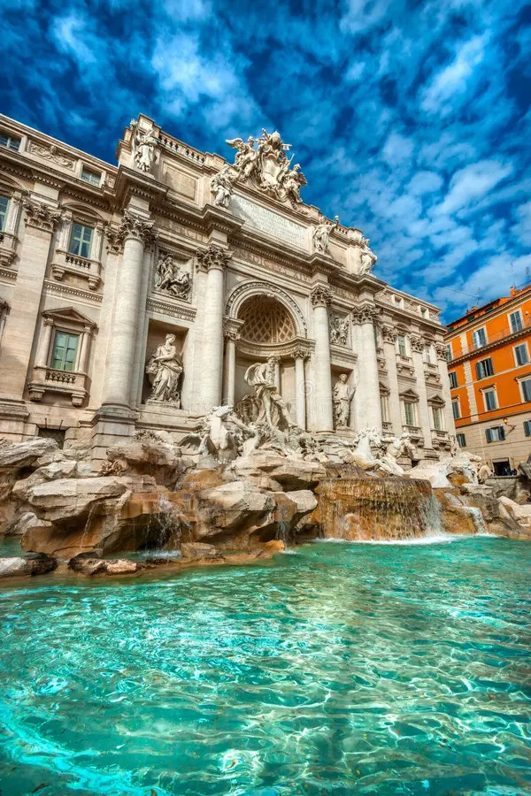

Italy

Italy is full of beautiful and historic places to visit. Rome is famous for the Colosseum and the Trevi Fountain, while Venice is known for its canals and gondola rides. Florence is a great place to discover art and history, and Milan is famous for fashion and modern life. Italy also has stunning natural landscapes like the Amalfi Coast and Lake Como, making it an exciting country to explore. 🇮🇹✨


The Leaning Tower of Pisa is one of the most famous architectural landmarks in the world, located in the city of Pisa. Construction began in 1173, but due to soft ground beneath its foundation, the tower began to tilt during its build. Visitors from all over the globe travel to the Piazza dei Miracoli to admire its unique design and capture iconic photos with the famous leaning monument.

Located in the heart of Rome, the Colosseum is the largest ancient amphitheater ever built. Constructed under the Flavian emperors in 80 AD, it held thousands of spectators for gladiator contests, public spectacles, and theatrical dramas. Today, it stands as an enduring symbol of the Roman Empire's architectural brilliantness and rich ancient history.

Venice is a world-famous city built across a lagoon of over 100 small islands in northeastern Italy. Instead of roads, Venice relies on a vast network of scenic waterways, including the Grand Canal. Riding in a traditional gondola through romantic stone bridges and historic Venetian architecture is one of Italy's most unforgettable travel experiences.

The Trevi Fountain is Rome's largest and most famous Baroque fountain, completed in 1762. Designed by Nicola Salvi, it features magnificent sculptures depicting the sea god Oceanus alongside intricate stonework. A popular legend says that tossing a coin over your left shoulder into the fountain ensures a return trip to Rome!